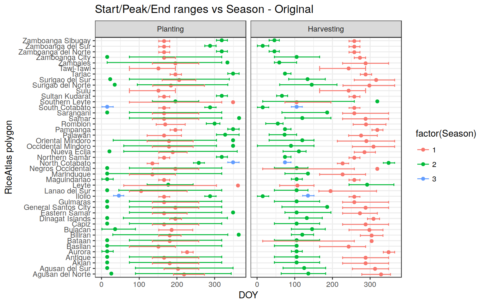

RiceAtlas: Checks and Reshuffling of data
Here I am going to document the passages used to reshuffle the RiceAtlas dataset, and correct inconsistencies, needed to allow an easier comparison with PhenoRice results.
Preprocessing - changes on data organization
The original “RiceAtlas” attribute table is organized in “wide” format, with one row for “subregion”, and many columns containing the data for the different seasons (e.g., PLANT_ST_1, PLANT_ST_2, ….).
main_folder <- "/home/lb/my_data/prasia/Data/"
in_riceatlas_shp = read_vect(file.path(main_folder,
"vector/Ricetlas/riceatlas_asia.shp"))
# print(head(in_riceatlas_shp, 2), width = 800)This makes working with the dataset difficult. First thing we (Bhogendra) did, was transforming the dataset in a more “manageable” long format:
in_data <- data.table::fread(file.path(main_folder,
"/vector/NormalizedDB.txt"))
head(in_data)## Objectid ISO Country Region Sub_region N_seasons Method Season
## 1: 1 BRN Brunei Belait NA 1 planting Main
## 2: 1 BRN Brunei Belait NA 1 planting NA
## 3: 1 BRN Brunei Belait NA 1 planting NA
## 4: 1 BRN Brunei Belait NA 1 planting Main
## 5: 1 BRN Brunei Belait NA 1 planting NA
## 6: 1 BRN Brunei Belait NA 1 planting NA
## Pheno_stage Start Peak End Total_area Seasonal_area Seasonal_production
## 1: plant_st1 274 288 304 1862 1862 1119
## 2: plant_st2 0 0 0 1862 0 0
## 3: plant_st3 0 0 0 1862 0 0
## 4: harv_st1 1 15 31 1862 1862 1119
## 5: harv_st2 0 0 0 1862 0 0
## 6: harv_st3 0 0 0 1862 0 0Now, we have multiple rows per subregion, each corresponding to a possible “Season” and to a Phenological “indicator” (e.g., Planting or Harvesting). We can do some additional reshuffling for ease of use:
in_atlas <- in_data %>%
# split the "Pheno_stage" column
tidyr::separate(Pheno_stage, c("Stage", "season"), "_st") %>%
# remove empty rows
dplyr::filter((Start != 0 | Peak != 0 | End != 0)) %>%
# create a unique name for each region and a unique identifier ysung ISO + OBJID
dplyr::mutate(ID_name = paste(ISO, Region, Sub_region, sep = "_")) %>%
dplyr::mutate(ID_name = stringr::str_replace(ID_name, "NA", ""))%>%
dplyr::mutate(ID = paste(ISO, Objectid, sep = "_")) %>%
#remove whitespaces from "Region"
dplyr::mutate(Region = gsub(" ", "_", Region) ) %>%
dplyr::mutate(ID_name = gsub(" ", "_", ID_name) ) %>%
# Rename and reorder columns
dplyr::select(ID, ID_name, N_seasons, season,
Stage, Start, Peak, End, Total_area, Seasonal_area,
Seasonal_production, Season, Country, Region, Sub_region,
Objectid, ISO) %>%
dplyr::rename(cty = ISO, N_seas = N_seasons, Seas_name = Season, Season = season,
Seas_area = Seasonal_area , Seas_prod = Seasonal_production,
Tot_area = Total_area, OBJECTID = Objectid) %>%
dplyr::mutate(Stage = factor(Stage,
levels = c("plant", "harv"),
labels = c("Planting","Harvesting"))) %>%
tibble::as_tibble()
head(in_atlas)## # A tibble: 6 x 17
## ID ID_name N_seas Season Stage Start Peak End Tot_area
## <chr> <chr> <int> <chr> <fctr> <int> <int> <int> <int>
## 1 BRN_1 BRN_Belait_ 1 1 Planting 274 288 304 1862
## 2 BRN_1 BRN_Belait_ 1 1 Harvesting 1 15 31 1862
## 3 BTN_2 BTN_Bumthang_ 1 1 Planting 166 181 196 15
## 4 BTN_2 BTN_Bumthang_ 1 1 Harvesting 305 319 334 15
## 5 BTN_3 BTN_Chhukha_ 1 1 Planting 166 181 196 1130
## 6 BTN_3 BTN_Chhukha_ 1 1 Harvesting 305 319 334 1130
## # ... with 8 more variables: Seas_area <int>, Seas_prod <int>,
## # Seas_name <chr>, Country <chr>, Region <chr>, Sub_region <chr>,
## # OBJECTID <int>, cty <chr>Checks on “consistency of the dataset”
A quick check on the “consistency” of the dataset can be made by computing and plotting the differences between the reported “Start”, “Peak” and “End” DOYs, for each region.

From this, it is obvious that the dataset is usually coherent, but also that it has some problems. In several cases Start/Peak/End values do not account for “circularity”.
Therefore we can have cases such as:
Start = 354,Peak = 3, End = 18–>End <=StartandPeak <= Start–> leading to negative outliersStart = 4, Peak = 292, End = 34–>End <=StartandPeak <= Start–> leading to positive outliers
, plus other less common problems (e.g., Start = 32 ,Peak = 32, End = 0, Start = 148, Peak = 148, End = 155 Start = 213 ,Peak = 227, End = 213, Start = 277, Peak = 19, End = 307), as well as obvious mistakes (e.g., Start = 74, Peak = 74, End = 196, Start = 1, Peak = 4, End = 66)
We also have a very “anomalous” high frequency at Peak - Start = 30, but we can not do anything about that.
All this makes an automatic comparison with PhenoRice results difficult.
Initial situation - PHL
For example, see what we have as Start - Peak - End ranges for some provinces in PHL:
A mix of correct data, some missing data (e.g, Tarlac Harvesting Start), and inconsistent data (e.g., Nueva Ecjia Planting; Bataan Harvesting). Most of the problems are obviously related to “circularization” of DOYS in Season 2, which crosses the year, and for which Start/Peak/End are evidently not coherent. In addition, we have the already mentioned problems of “switched” seasons, in some cases (though in the end this is the lesser problem)

Reshufflling of RiceAtlas data to solve the problem
To solve the problem, we need to filter out errors and reshuffle the DOYS in a consistent way.
out_atlas <- in_atlas %>%
# add 365 to End/Peak where differences are negative
pr_mutate_when((endstart_lgt < 0 & endstart_lgt < 0),
list(End = End + 365)) %>%
# re-create the diffs for test purposes
dplyr::mutate(endstart_lgt = (End - Start),
peakstart_lgt = (Peak - Start),
endpeak_lgt = (End - Peak)) %>%
# Second fix where we still have prblems
pr_mutate_when((endpeak_lgt > 250 & peakstart_lgt < -250 & !is.na(Start)),
list(Start = Start - 365)) %>%
pr_mutate_when((endpeak_lgt > 250 & peakstart_lgt < -250 & !is.na(End)),
list(End = End - 365)) %>%
# re-create the diffs for test purposes
dplyr::mutate(endstart_lgt = (End - Start),
peakstart_lgt = (Peak - Start),
endpeak_lgt = (End - Peak)) %>%
# Third fix where we still have prblems
pr_mutate_when(endpeak_lgt > 300,
list(End = End - 365)) %>%
# re-create the diffs for test purposes
dplyr::mutate(endstart_lgt = (End - Start),
peakstart_lgt = (Peak - Start),
endpeak_lgt = (End - Peak)) %>%
# Remove Start/End when they are equal to Peak
pr_mutate_when((Start == Peak), list(Start = NA)) %>%
pr_mutate_when((End == Peak), list(End = NA))
# Now manually fixErros and corner cases
out_atlas <- out_atlas %>%
#manually fix corner cases
#"IND Puducherry Yanam", which has very strange data on the original table
#( Harvesting: Start = 4 Peak = 292 End = 34; Planting: Start = 277 Peak = 19 End = 307).
#The obnly reasonable way IMO is to remove Start and set End to 365 + 34 (Planting)
#and remove Start and End (Harvesting)
pr_mutate_when((ID_name == "IND Puducherry Yanam" & Stage == "Harvesting" & Season == 2),
list(Start = NA, End = 365 + End)) %>%
pr_mutate_when((ID_name == "IND Puducherry Yanam" & Stage == "Planting" & Season == 2),
list(Start = NA, End = NA)) %>%
#"MMR Tanintharyi"
pr_mutate_when((ID_name == "MMR Tanintharyi " & Stage == "Planting" & Season == 2),
list(Start = NA, End = NA)) %>%
#"severla places with "213 227 213"" --> Remove End
pr_mutate_when((Start == 213 & Peak == 227 & End == 213), list(End = NA)) %>%
#IND Orissa Nuapada
pr_mutate_when((ID_name == "IND Orissa Nuapada" & Stage == "Planting" & Season == 3),
list(End = NA)) %>%
#IND Uttaranchal Naini Tal
pr_mutate_when((ID_name == "IND Uttaranchal Naini Tal" & Stage == "Planting" & Season == 1),
list(End = NA)) %>%
#IND Orissa Malkangiri: Peak == 0. Resete to midpoint S/E
pr_mutate_when((ID_name == "IND Orissa Malkangiri" & Stage == "Planting" & Season == 2),
list(Peak = 258)) %>%
#several places with "319 305 334" --> Remove Start
pr_mutate_when((peakstart_lgt == -14), list(Start = NA)) %>%
#several places with "30 -5 35" --> Remove Start
pr_mutate_when((peakstart_lgt == -5), list(Start = NA)) %>%
# re-create the diffs for test purposes
dplyr::mutate(endstart_lgt = (End - Start),
peakstart_lgt = (Peak - Start),
endpeak_lgt = (End - Peak)) Let’s see again the histograms:
Ok. Now we are in much better shape (note that I never touched the “Peak” date, which we take as “reference”). End - Start is always positive, as well as End - Peak. Still some polygons with “anomalously” large ranges, but we can live with those.
Let’s see the PHL region again:
Much better but still not there. Now I’ll have to reconcile the planting and the harvesting. If Harvesting after reshuffling is still before planting, subtract 365:
reorganize <- function(sub_atlas) {
for (seas in unique(sub_atlas$Season)) {
data_in <- sub_atlas %>%
dplyr::filter(Season == seas)
if (data_in$Peak[1] > data_in$Peak[2]) {
sub_atlas[sub_atlas$Season == seas,]$Start[1] <- data_in$Start[1] - 365
sub_atlas[sub_atlas$Season == seas,]$Peak[1] <- data_in$Peak[1] - 365
sub_atlas[sub_atlas$Season == seas,]$End[1] <- data_in$End[1] - 365
}
}
sub_atlas
}
final_out <- list()
regions <- unique(out_atlas$ID_name)
for (regind in seq_along(regions)) {
indata <- out_atlas %>%
dplyr::filter(ID_name == regions[regind])
regions[regind]
final_out[[regind]] <- reorganize(indata)
}
final_out <- data.table::rbindlist(final_out)Let’s see the result:
Almost ALL SET ! Now reorder the seasons so that 1 - 2 - 3 is always in order (not really needed, but while we are at it….)
final_out2 <- final_out %>%
group_by(ID_name, Stage) %>%
dplyr::mutate(Seas_ord = rank(Peak, ties.method = "first"))Final situation - PHL
Here the final result:
DONE! Now we have a coherent dataset. We can save the reshuflled dataset, after re-joining the geometry.
in_shp <- in_riceatlas_shp %>%
select(OBJECTID, ISO) %>%
rename(cty = ISO) %>%
arrange(cty, OBJECTID)
out_shp <- in_shp %>%
left_join(final_out2)
write_shape(out_shp, file.path(main_folder,
"/vector/Ricetlas/riceatlas_asia_reshuffled.shp"),
overwrite = TRUE)
# out_phl <- out_shp %>%
# dplyr::filter(cty == "PHL", Seas_ord == 2, Stage == "Planting")
#
# plot_vect(out_phl, fill_var = "Peak", palette_name = "RdYlGn")